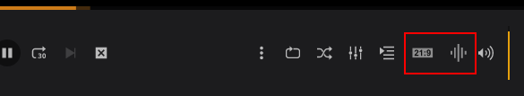
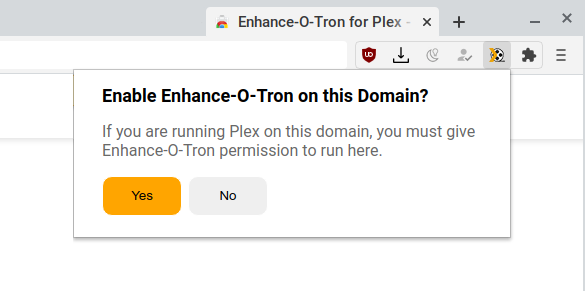

Enhance-O-Tron Updated!
What's New in v1.3.0?
Compressor -- Look for the volume compressor icon in the player control toolbar to enable dynamic range audio compression. This feature reduces the volume of loud sounds and amplifies quiet sounds, making the total volume output more consistent. This is generally useful when watching video at low volumes, adding clarity to voices and eliminating dramatic spikes in volume from sound effects.
21:9 ultrawide zoom -- Note the 21:9 zoom button has moved from the center player controls to the right player controls.

Support for custom hosts -- Enhance-O-Tron can now run on any domain, not just app.plex.tv and localhost. If you're running your Plex server on a custom IP or host, just navigate to your Plex Web page and then click the Enhance-O-Tron browser toolbar button to give it permission to run on that site.

Thank you! If you find Enhance-O-Tron helpful please consider leaving a review. I'm a solo developer working on this in my spare time, and your support really helps to keep the project alive. As always, the sourcecode for everything I build is shared on GitHub. If you have any comments or suggestions hit me up at dev@conceptualspace.net 😃